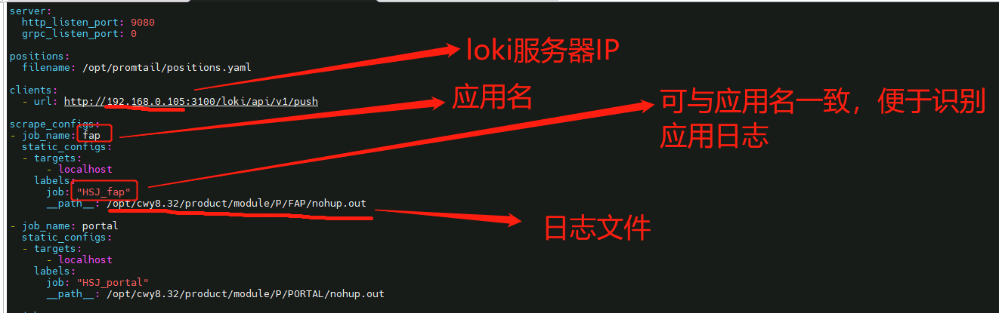
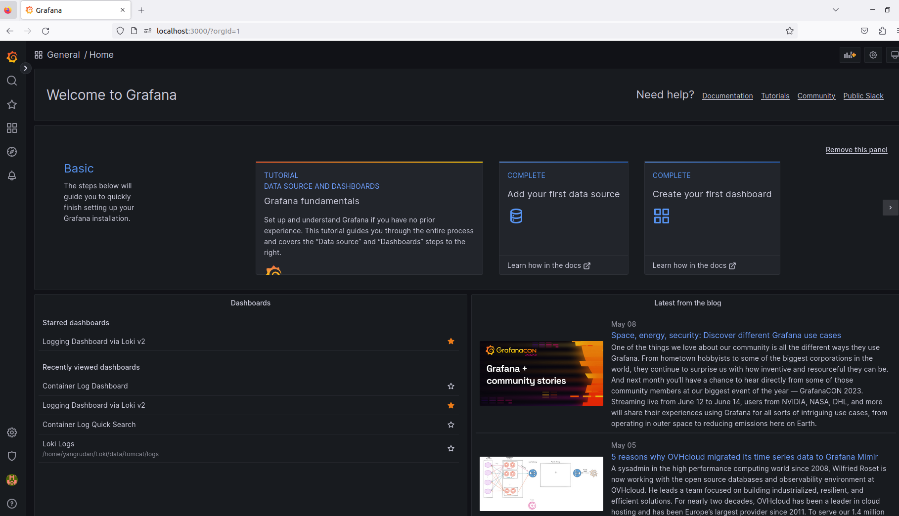

二、环境搭建¶
1. 下载安装包¶
curl -O -L "https://github.com/grafana/loki/releases/download/v1.5.0/loki-linux-amd64.zip"
curl -O -L "https://github.com/grafana/loki/releases/download/v1.5.0/promtail-linux-amd64.zip"
wget https://dl.grafana.com/oss/release/grafana-7.1.0-1.x86_64.rpm

2. Loki安装¶
mkdir /data/loki/{chunks,index}
unzip loki-linux-amd64.zip
mv loki-linux-amd64 /data/loki/
添加yaml文件, 内容如下：
auth_enabled: false
server:
http_listen_port: 3100
ingester:
lifecycler:
address: 127.0.0.1
ring:
kvstore:
store: inmemory
replication_factor: 1
final_sleep: 0s
chunk_idle_period: 5m
chunk_retain_period: 30s
schema_config:
configs:
- from: 2023-05-07
store: boltdb
object_store: filesystem
schema: v11
index:
prefix: index_
period: 168h #每张表的时间范围6天
storage_config:
boltdb:
directory: index #索引文件存储地址
filesystem:
directory: chunks #块存储地址
limits_config:
enforce_metric_name: false
reject_old_samples: true
reject_old_samples_max_age: 168h
chunk_store_config:
# 最大可查询历史日期 90天
max_look_back_period: 672h
# 表的保留期90天
table_manager:
retention_deletes_enabled: true
retention_period: 672h

3. promtail安装¶
mkdir /data/promtail
unzippromtail-linux-amd64.zip
mv promtail-linux-amd64 /data/promtail/
添加yaml文件, 内容如下：
server:
http_listen_port: 9080
grpc_listen_port: 0
positions:
filename: ./positions.ymal
ignore_invalid_yaml: true
clients:
- url: http://127.0.0.1:3100/loki/api/v1/push
scrape_configs:
- job_name: loki_log
file_sd_configs:
- files:
- ./conf/*.yaml
refresh_interval: 1m
含义如下：  并在conf目录添加log.yaml，加入日志目录，内容如下：
- targets:
- 127.0.0.1
labels:
host: 127.0.0.1
__path__: /home/yangrudan/Loki/data/tomcat/logs/*

4. Grafana安装¶
双击deb文件进行安装
5. 启动¶
分部cd到loki、promtail目录，依次启动loki、promtail、Grafana
nohup ./loki -config.file=./loki.yaml > ./loki2.log 2>&1 &
nohup ./promtail -config.file=./promtail.yaml > ./promtail2.log 2>&1 &
systemctl daemon-reload
systemctl start grafana-server
systemctl status grafana-server
6. 进入Grafana界面¶
